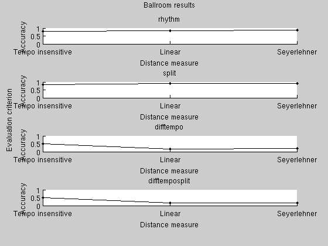
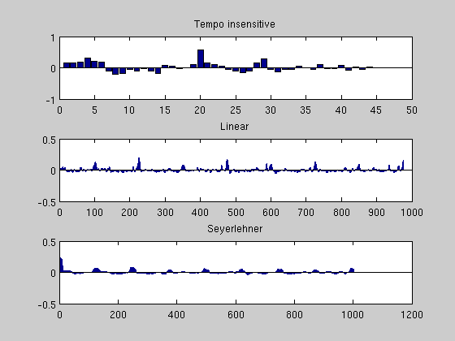

ISP_RHYTHMDEMO Demonstration of isp_tirhythm and the evaluation framework
Test different variations of the tempo-insensitive rhythm feature
datapath = 'evaluatedata'; commonOptions = struct('experiment', 'ballroom', ... 'ismir2004ballroompath', './', ... 'dataPath', datapath);
We use the cacheRawData feature of the isp_tirhythm feature. This makes it possible to do the computationally heavy tempo extraction once and for all, and postpone the lightweight aggregation into the compact tempo-insensitive feature until the distance computation stage. This allows us to reuse the tempo extraction.
Define a dummy distance measure that only extracts the tempo
dummyRhythMeasure = isp_tirhythm; dummyRhythMeasure.options.cacheRawData = true;
Extract the features
isp_evaluate(dummyRhythMeasure, commonOptions, 'distribute', 1); isp_runjob(fullfile(datapath, 'distributedfeatures'))
Testing distance measure Rhythm. Performing ballroom test. Creating job file evaluatedata/distributedfeatures/pendingJobs/job000001.mat. Creating job file evaluatedata/distributedfeatures/pendingJobs/job000002.mat. Creating job file evaluatedata/distributedfeatures/pendingJobs/job000003.mat. Creating job file evaluatedata/distributedfeatures/pendingJobs/job000004.mat. Creating job file evaluatedata/distributedfeatures/pendingJobs/job000005.mat. Creating job file evaluatedata/distributedfeatures/pendingJobs/job000006.mat. Creating job file evaluatedata/distributedfeatures/pendingJobs/job000007.mat. Creating job file evaluatedata/distributedfeatures/pendingJobs/job000008.mat. Creating job file evaluatedata/distributedfeatures/pendingJobs/job000009.mat. Creating job file evaluatedata/distributedfeatures/pendingJobs/job000010.mat. Creating job file evaluatedata/distributedfeatures/pendingJobs/job000011.mat. Creating job file evaluatedata/distributedfeatures/pendingJobs/job000012.mat. Creating job file evaluatedata/distributedfeatures/pendingJobs/job000013.mat. Creating job file evaluatedata/distributedfeatures/pendingJobs/job000014.mat. Creating job file evaluatedata/distributedfeatures/pendingJobs/job000015.mat. Creating job file evaluatedata/distributedfeatures/pendingJobs/job000016.mat. Creating job file evaluatedata/distributedfeatures/pendingJobs/job000017.mat. Creating job file evaluatedata/distributedfeatures/pendingJobs/job000018.mat. Creating job file evaluatedata/distributedfeatures/pendingJobs/job000019.mat. Creating job file evaluatedata/distributedfeatures/pendingJobs/job000020.mat. Creating job file evaluatedata/distributedfeatures/pendingJobs/job000021.mat. Creating job file evaluatedata/distributedfeatures/pendingJobs/job000022.mat. Creating job file evaluatedata/distributedfeatures/pendingJobs/job000023.mat. Creating job file evaluatedata/distributedfeatures/pendingJobs/job000024.mat. Creating job file evaluatedata/distributedfeatures/pendingJobs/job000025.mat. Creating job file evaluatedata/distributedfeatures/pendingJobs/job000026.mat. Creating job file evaluatedata/distributedfeatures/pendingJobs/job000027.mat. Creating job file evaluatedata/distributedfeatures/pendingJobs/job000028.mat. Creating job file evaluatedata/distributedfeatures/pendingJobs/job000029.mat. Creating job file evaluatedata/distributedfeatures/pendingJobs/job000030.mat. Creating job file evaluatedata/distributedfeatures/pendingJobs/job000031.mat. Creating job file evaluatedata/distributedfeatures/pendingJobs/job000032.mat. Creating job file evaluatedata/distributedfeatures/pendingJobs/job000033.mat. Creating job file evaluatedata/distributedfeatures/pendingJobs/job000034.mat. Creating job file evaluatedata/distributedfeatures/pendingJobs/job000035.mat. No more pending jobs.
Define the real features that we actually want to test
distanceMeasures = {};
distanceMeasures{end+1} = isp_tirhythm;
% The paper where the tempo-insensitive rhythmic patterns are introduced ("A
% TEMPO-INSENSITIVE REPRESENTATION OF RHYTHMIC PATTERNS" by J. H. Jensen,
% M. G. Christensen and S. H. Jensen), uses 60 bands. The current default is
% 45 bands, since accuracy seems nearly identical at a lower
% dimensionality. Uncomment the next line to duplicate the results from the
% paper.
%distanceMeasures{end}.options.nBands = 60;
distanceMeasures{end}.name = 'Tempo insensitive';
% The non-tempoinsensitive version
distanceMeasures{end+1} = isp_tirhythm;
distanceMeasures{end}.name = 'Linear';
distanceMeasures{end}.options.variation='raw';
% A re-implementation of the feature in ISMIR 2007 paper "From Rhythm
% Patterns to Perceived Tempo" by K. Seyerlehner, G. Widmer and D. Schnitzer.
distanceMeasures{end+1} = isp_tirhythm;
distanceMeasures{end}.name = 'Seyerlehner'
distanceMeasures{end}.options.variation='rawseyerlehner';
distanceMeasures{end}.options.tMin=0;
distanceMeasures{end}.options.offset=0;
distanceMeasures =
[1x1 struct] [1x1 struct] [1x1 struct]
Compute distances and evaluate the results
for n=1:length(distanceMeasures) dstMsr = distanceMeasures{n}; dstMsr.options.cacheRawData = true; results{n} = isp_evaluate(dstMsr, commonOptions, 'distribute', 3); end
Testing distance measure Tempo insensitive. Performing ballroom test. Loading results from file evaluatedata/distributedfeatures/results/results000001.mat. Loading results from file evaluatedata/distributedfeatures/results/results000002.mat. Loading results from file evaluatedata/distributedfeatures/results/results000003.mat. Loading results from file evaluatedata/distributedfeatures/results/results000004.mat. Loading results from file evaluatedata/distributedfeatures/results/results000005.mat. Loading results from file evaluatedata/distributedfeatures/results/results000006.mat. Loading results from file evaluatedata/distributedfeatures/results/results000007.mat. Loading results from file evaluatedata/distributedfeatures/results/results000008.mat. Loading results from file evaluatedata/distributedfeatures/results/results000009.mat. Loading results from file evaluatedata/distributedfeatures/results/results000010.mat. Loading results from file evaluatedata/distributedfeatures/results/results000011.mat. Loading results from file evaluatedata/distributedfeatures/results/results000012.mat. Loading results from file evaluatedata/distributedfeatures/results/results000013.mat. Loading results from file evaluatedata/distributedfeatures/results/results000014.mat. Loading results from file evaluatedata/distributedfeatures/results/results000015.mat. Loading results from file evaluatedata/distributedfeatures/results/results000016.mat. Loading results from file evaluatedata/distributedfeatures/results/results000017.mat. Loading results from file evaluatedata/distributedfeatures/results/results000018.mat. Loading results from file evaluatedata/distributedfeatures/results/results000019.mat. Loading results from file evaluatedata/distributedfeatures/results/results000020.mat. Loading results from file evaluatedata/distributedfeatures/results/results000021.mat. Loading results from file evaluatedata/distributedfeatures/results/results000022.mat. Loading results from file evaluatedata/distributedfeatures/results/results000023.mat. Loading results from file evaluatedata/distributedfeatures/results/results000024.mat. Loading results from file evaluatedata/distributedfeatures/results/results000025.mat. Loading results from file evaluatedata/distributedfeatures/results/results000026.mat. Loading results from file evaluatedata/distributedfeatures/results/results000027.mat. Loading results from file evaluatedata/distributedfeatures/results/results000028.mat. Loading results from file evaluatedata/distributedfeatures/results/results000029.mat. Loading results from file evaluatedata/distributedfeatures/results/results000030.mat. Loading results from file evaluatedata/distributedfeatures/results/results000031.mat. Loading results from file evaluatedata/distributedfeatures/results/results000032.mat. Loading results from file evaluatedata/distributedfeatures/results/results000033.mat. Loading results from file evaluatedata/distributedfeatures/results/results000034.mat. Loading results from file evaluatedata/distributedfeatures/results/results000035.mat. Computing distance matrix. Evaluating distance matrix. Evaluating distance matrix. Evaluating distance matrix. Evaluating distance matrix. Testing distance measure Linear. Performing ballroom test. Loading results from file evaluatedata/distributedfeatures/results/results000001.mat. Loading results from file evaluatedata/distributedfeatures/results/results000002.mat. Loading results from file evaluatedata/distributedfeatures/results/results000003.mat. Loading results from file evaluatedata/distributedfeatures/results/results000004.mat. Loading results from file evaluatedata/distributedfeatures/results/results000005.mat. Loading results from file evaluatedata/distributedfeatures/results/results000006.mat. Loading results from file evaluatedata/distributedfeatures/results/results000007.mat. Loading results from file evaluatedata/distributedfeatures/results/results000008.mat. Loading results from file evaluatedata/distributedfeatures/results/results000009.mat. Loading results from file evaluatedata/distributedfeatures/results/results000010.mat. Loading results from file evaluatedata/distributedfeatures/results/results000011.mat. Loading results from file evaluatedata/distributedfeatures/results/results000012.mat. Loading results from file evaluatedata/distributedfeatures/results/results000013.mat. Loading results from file evaluatedata/distributedfeatures/results/results000014.mat. Loading results from file evaluatedata/distributedfeatures/results/results000015.mat. Loading results from file evaluatedata/distributedfeatures/results/results000016.mat. Loading results from file evaluatedata/distributedfeatures/results/results000017.mat. Loading results from file evaluatedata/distributedfeatures/results/results000018.mat. Loading results from file evaluatedata/distributedfeatures/results/results000019.mat. Loading results from file evaluatedata/distributedfeatures/results/results000020.mat. Loading results from file evaluatedata/distributedfeatures/results/results000021.mat. Loading results from file evaluatedata/distributedfeatures/results/results000022.mat. Loading results from file evaluatedata/distributedfeatures/results/results000023.mat. Loading results from file evaluatedata/distributedfeatures/results/results000024.mat. Loading results from file evaluatedata/distributedfeatures/results/results000025.mat. Loading results from file evaluatedata/distributedfeatures/results/results000026.mat. Loading results from file evaluatedata/distributedfeatures/results/results000027.mat. Loading results from file evaluatedata/distributedfeatures/results/results000028.mat. Loading results from file evaluatedata/distributedfeatures/results/results000029.mat. Loading results from file evaluatedata/distributedfeatures/results/results000030.mat. Loading results from file evaluatedata/distributedfeatures/results/results000031.mat. Loading results from file evaluatedata/distributedfeatures/results/results000032.mat. Loading results from file evaluatedata/distributedfeatures/results/results000033.mat. Loading results from file evaluatedata/distributedfeatures/results/results000034.mat. Loading results from file evaluatedata/distributedfeatures/results/results000035.mat. Computing distance matrix. Evaluating distance matrix. Evaluating distance matrix. Evaluating distance matrix. Evaluating distance matrix. Testing distance measure Seyerlehner. Performing ballroom test. Loading results from file evaluatedata/distributedfeatures/results/results000001.mat. Loading results from file evaluatedata/distributedfeatures/results/results000002.mat. Loading results from file evaluatedata/distributedfeatures/results/results000003.mat. Loading results from file evaluatedata/distributedfeatures/results/results000004.mat. Loading results from file evaluatedata/distributedfeatures/results/results000005.mat. Loading results from file evaluatedata/distributedfeatures/results/results000006.mat. Loading results from file evaluatedata/distributedfeatures/results/results000007.mat. Loading results from file evaluatedata/distributedfeatures/results/results000008.mat. Loading results from file evaluatedata/distributedfeatures/results/results000009.mat. Loading results from file evaluatedata/distributedfeatures/results/results000010.mat. Loading results from file evaluatedata/distributedfeatures/results/results000011.mat. Loading results from file evaluatedata/distributedfeatures/results/results000012.mat. Loading results from file evaluatedata/distributedfeatures/results/results000013.mat. Loading results from file evaluatedata/distributedfeatures/results/results000014.mat. Loading results from file evaluatedata/distributedfeatures/results/results000015.mat. Loading results from file evaluatedata/distributedfeatures/results/results000016.mat. Loading results from file evaluatedata/distributedfeatures/results/results000017.mat. Loading results from file evaluatedata/distributedfeatures/results/results000018.mat. Loading results from file evaluatedata/distributedfeatures/results/results000019.mat. Loading results from file evaluatedata/distributedfeatures/results/results000020.mat. Loading results from file evaluatedata/distributedfeatures/results/results000021.mat. Loading results from file evaluatedata/distributedfeatures/results/results000022.mat. Loading results from file evaluatedata/distributedfeatures/results/results000023.mat. Loading results from file evaluatedata/distributedfeatures/results/results000024.mat. Loading results from file evaluatedata/distributedfeatures/results/results000025.mat. Loading results from file evaluatedata/distributedfeatures/results/results000026.mat. Loading results from file evaluatedata/distributedfeatures/results/results000027.mat. Loading results from file evaluatedata/distributedfeatures/results/results000028.mat. Loading results from file evaluatedata/distributedfeatures/results/results000029.mat. Loading results from file evaluatedata/distributedfeatures/results/results000030.mat. Loading results from file evaluatedata/distributedfeatures/results/results000031.mat. Loading results from file evaluatedata/distributedfeatures/results/results000032.mat. Loading results from file evaluatedata/distributedfeatures/results/results000033.mat. Loading results from file evaluatedata/distributedfeatures/results/results000034.mat. Loading results from file evaluatedata/distributedfeatures/results/results000035.mat. Computing distance matrix. Evaluating distance matrix. Evaluating distance matrix. Evaluating distance matrix. Evaluating distance matrix.
Plot and print the results
isp_plotresults(cat(1, results{:}));
fprintf('\n\n');
for n=1:length(distanceMeasures)
fprintf('%s: Accuracy %f. Accuracy when discarding songs of similar tempo: %f\n', results{n}{1}.distancename, results{n}{1}.split.nnAccuracy, results{n}{1}.difftemposplit.nnAccuracy);
end
fprintf('\n\n');
Tempo insensitive: Accuracy 0.823810. Accuracy when discarding songs of similar tempo: 0.500000 Linear: Accuracy 0.890476. Accuracy when discarding songs of similar tempo: 0.163158 Seyerlehner: Accuracy 0.890476. Accuracy when discarding songs of similar tempo: 0.184211
Just to show how to extract the compact features directly, we plot the raw features for BallroomData/ChaChaCha/Albums-Cafe_Paradiso-05.wav for the three distance measures we have defined. In this case, we do not want any intermediate feature, so we need to set 'cacheRawData' to false
file = fullfile(isp_toolboxpath, 'Loveshadow - The_Acorns. Seedin Time in The Oak Room - excerpt.mp3'); figure for n=1:length(distanceMeasures) dstMsr = distanceMeasures{n}; dstMsr.options.cacheRawData = false; feature = isp_extractfeature(file, dstMsr); subplot(length(distanceMeasures), 1, n) bar(feature) title(dstMsr.name) end
Executing LD_LIBRARY_PATH="/home/jesper/no_backup/isptoolbox/toolbox" /home/jesper/no_backup/isptoolbox/toolbox/isp_mplayer.GLNX86 -noconsolecontrols -vc null -vo null -quiet -ao pcm:file=/tmp/fileWgd0Ly.wav:waveheader:fast -af resample=8000:1:1 "/home/jesper/no_backup/isptoolbox/toolbox/Loveshadow - The_Acorns. Seedin Time in The Oak Room - excerpt.mp3" Extracting rhythm pattern. Executing LD_LIBRARY_PATH="/home/jesper/no_backup/isptoolbox/toolbox" /home/jesper/no_backup/isptoolbox/toolbox/isp_mplayer.GLNX86 -noconsolecontrols -vc null -vo null -quiet -ao pcm:file=/tmp/fileOcTWhD.wav:waveheader:fast -af resample=8000:1:1 "/home/jesper/no_backup/isptoolbox/toolbox/Loveshadow - The_Acorns. Seedin Time in The Oak Room - excerpt.mp3" Extracting rhythm pattern. Executing LD_LIBRARY_PATH="/home/jesper/no_backup/isptoolbox/toolbox" /home/jesper/no_backup/isptoolbox/toolbox/isp_mplayer.GLNX86 -noconsolecontrols -vc null -vo null -quiet -ao pcm:file=/tmp/file9ESzHx.wav:waveheader:fast -af resample=8000:1:1 "/home/jesper/no_backup/isptoolbox/toolbox/Loveshadow - The_Acorns. Seedin Time in The Oak Room - excerpt.mp3" Extracting rhythm pattern.
| Intelligent Sound Processing Toolbox | Contents |